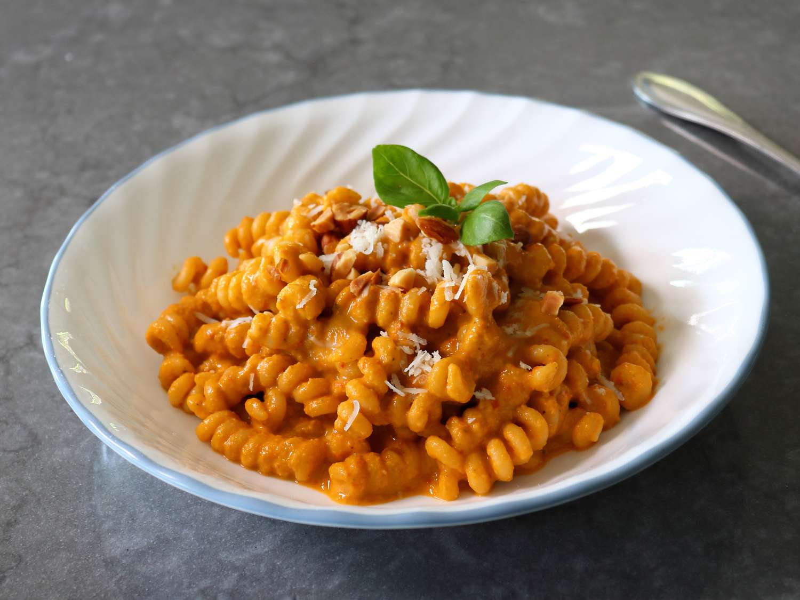

Home
Sicilian Tomato Pesto

Description
This Sicilian tomato pesto is a delicious and versatile sauce that can be used in a variety of dishes. It's made with sun-dried tomatoes, almonds, garlic, and olive oil, creating a rich and flavorful condiment.
Ingredients
- 1 cup sun-dried tomatoes, packed in oil
- 1/2 cup almonds, toasted
- 2 cloves garlic, minced
- 1/2 cup fresh basil leaves
- 1/2 cup olive oil
- Salt and pepper to taste
- 1/4 cup grated Parmesan cheese (optional)
Steps
- In a food processor, combine the sun-dried tomatoes, almonds, garlic, and basil. Pulse until finely chopped.
- With the processor running, slowly drizzle in the olive oil until the mixture is smooth and creamy.
- Season with salt and pepper to taste. If desired, stir in the grated Parmesan cheese.
- Transfer the pesto to a jar and store it in the refrigerator for up to a week.
- Use it as a pasta sauce, sandwich spread, or dip for vegetables.